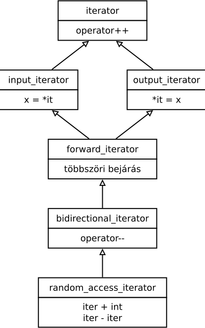

<!DOCTYPE html>
<html lang="hu">

<head>
<meta charset="utf-8">
<title>TEST InfoC++11 :: Sablon metaprogramozás</title>
<meta property="og:title" content="TEST InfoC++11 :: Sablon metaprogramozás">
<meta property="og:image" content="/modulz/logo.png">
<meta property="og:description" content="Sablonok használata. Viselkedés- és típusinformációs osztályok. A SFINAE szabály. A sablon metaprogramozás elemei.">
<meta property="og:site_name" content="InfoC++11 – C11 és C++11 programozás">
<meta name="description" content="Sablonok használata. Viselkedés- és típusinformációs osztályok. A SFINAE szabály. A sablon metaprogramozás elemei.">
<meta name="robots" content="noarchive">
<meta name="viewport" content="width=device-width, initial-scale=1">
<link rel="shortcut icon" href="../modulz/favicon.ico" id="faviconhref">
<link rel="apple-touch-icon" href="../modulz/logo_touch.png">
<link rel="image_src" href="../modulz/logo.png"> 
<link rel="stylesheet" href="../modulz/alap-ctrlv.css@v2.css">
<link rel="stylesheet" href="../modulz/style/localfonts.css@v2.css">
<script>var infoc = { onloads: [] };</script>
<script src="../modulz/site.js@v2"></script>
</head>

<body class="" data-version="2"
    data-halozati-hiba="Hálózati hiba a kérés teljesítése közben."
    data-tul-nagy-keres="A fájl túl nagy!"
    data-biztos-navigal="Biztos el szeretnél navigálni? A nem mentett változások elvesznek."
    data-ird-be-a-keresoszot="Írd be a keresőszót!"
    data-vissza="Vissza">

<div id="muzealis-darab" style="display: none;">A böngésződ túl régi. Látogass el a <a href="https://browsehappy.com">browsehappy.com</a> oldalra!</div>

<div class="bodycontent">

<nav class="menubg clearfix">
<div class="shaper">
<div id="menu" class="menu menu-font-size">
<a id="menu-nyito" class="menu-nyito"  role="button"><i class="hamburger"></i></a>
<div class="menu-brand"><a href="../index/index.html">InfoC++11</a></div>
<div id="menu-elemek" class="menu-elemek">
<ul>
<li class="almenu "><a>Infó</a>
<ul>
<li><a  href="../index/index.html">Kezdőlap</a>
<li><a  href="../covid19/index.html">COVID-19 infók</a>
<li><a  href="../fejlesztokornyezet/index.html">Fejlesztőkörnyezetek</a>
<li><a  href="../valgrindwin10/index.html">Windows 10 + Valgrind</a>
<li><a  href="../oldalterkep/index.html">Oldaltérkép</a>
<li><a  href="../elerhetoseg/index.html">Elérhetőség</a>
</ul>

<li class="almenu "><a>Tananyag</a>
<ul>
<li class="almenu "><a>Előadás</a>
<ul>
<li><a  href="../ea01/index.html">1. hét: Bevezető</a>
<li><a  href="../ea02/index.html">2. hét: C++11 osztályhierarchiák</a>
<li><a  href="../ea03/index.html">3. hét: Erős típusok használata</a>
<li><a  href="../ea04/index.html">4. hét: Tároló osztályok</a>
<li><a  href="../ea05/index.html">5. hét: Objektumok élettartama</a>
<li><a  href="../ea06/index.html">6. hét: Jobbérték referenciák</a>
<li><a  href="../ea07/index.html">7. hét: Objektumok memóriaképe</a>
<li><a  href="../ea08/index.html">8. hét: Kivételek</a>
<li><a  href="../ea09/index.html">9. hét: λ</a>
<li><a  href="index.html">10. hét: Sablon metaprogramozás</a>
<li><a  href="../ea11/index.html">11. hét: Paraméterlisták és -továbbítás, ...</a>
<li><a  href="../ea12/index.html">12. hét: Concepts</a>
<li><a  href="../ea13/index.html">13. hét: Többszálúság</a>
<li><a  href="../ea14/index.html">14. hét: Nyelvi elemzők</a>
</ul>

<li class="almenu "><a>Labor</a>
<ul>
<li><a  href="../lab01/index.html">1. hét: OOP tervezés, C++ frissítő</a>
<li><a  href="../lab02/index.html">2. hét: C++11 osztályhierarchiák</a>
<li><a  href="../lab03/index.html">3. hét: Erős típusok használata</a>
<li><a  href="../lab04/index.html">4. hét: Haladó memóriakezelés</a>
<li><a  href="../lab06/index.html">6. hét: Jobbérték referenciák</a>
<li><a  href="../lab07/index.html">7. hét: Objektumok élettartama</a>
<li><a  href="../lab08/index.html">8. hét: Kivételek</a>
<li><a  href="../lab09/index.html">9. hét: λ</a>
<li><a  href="../lab10/index.html">10. hét: Sablon metaprogramozás I.</a>
<li><a  href="../lab11/index.html">11. hét: Sablon metaprogramozás II.</a>
<li><a  href="../lab12/index.html">12. hét: STL</a>
<li><a  href="../lab13/index.html">13. hét: C++ fejlesztőeszközök</a>
<li><a  href="../lab14/index.html">14. hét: Nyelvi elemzők</a>
</ul>

<li class="almenu "><a>Feladatok</a>
<ul>
<li><a  href="../f00/index.html">0. hét: Összetett feladatok</a>
<li><a  href="../f01/index.html">1. hét: C99 nyelvi elemek</a>
<li><a  href="../f02/index.html">2. hét: C++11 osztályhierarchiák</a>
<li><a  href="../f03/index.html">3. hét: Típusok használata</a>
<li><a  href="../f04/index.html">4. hét: Tároló osztályok</a>
<li><a  href="../f05/index.html">5. hét: Objektumok élettartama</a>
<li><a  href="../f06/index.html">6. hét: Jobbérték referenciák</a>
<li><a  href="../f07/index.html">7. hét: Objektumok memóriaképe</a>
<li><a  href="../f08/index.html">8. hét: Kivételek</a>
<li><a  href="../f09/index.html">9. hét: λ</a>
<li><a  href="../f10/index.html">10. hét: Sablon metaprogramozás</a>
<li><a  href="../f11/index.html">11. hét: Paraméterlisták és -továbbítás, ...</a>
<li><a  href="../f12/index.html">12. hét: Concepts</a>
</ul>

<li class="almenu "><a>Prog2 emlékeztető</a>
<ul>
<li><a  href="../memoria/index.html">Memóriakezelés</a>
<li><a  href="../include/index.html">#include</a>
<li><a  href="../inline/index.html">inline</a>
<li><a  href="../const/index.html">const</a>
<li><a  href="../referenciak/index.html">Referenciák</a>
<li><a  href="../ertekkonstref/index.html">Érték és konstans referencia</a>
<li><a  href="../operatorok/index.html">Operátorok</a>
<li><a  href="../tarolo/index.html">Tárolók</a>
<li><a  href="../iterator/index.html">Iterátorok</a>
<li><a  href="../orokles/index.html">Öröklés</a>
<li><a  href="../stl/index.html">STL</a>
<li><a  href="../castok/index.html">Cast-ok</a>
<li><a  href="../template/index.html">Template</a>
<li><a  href="../template-szintaxis/index.html">Template szintaxis</a>
</ul>

</ul>

<li class="almenu "><a>Extrák</a>
<ul>
<li><a  href="../irodalom/index.html">Irodalom, blogok</a>
<li class="almenu "><a>C</a>
<ul>
<li><a  href="../restrict/index.html">C99 restrict</a>
<li><a  href="../orokles_cben/index.html">Öröklés C-ben</a>
</ul>

<li class="almenu "><a>C++ elemek, eszközök</a>
<ul>
<li><a  href="../cpp1417/index.html">C++14/17</a>
<li><a  href="../void_t/index.html">void_t</a>
<li><a  href="../string_view/index.html">std::string_view</a>
<li><a  href="../deletesize/index.html">operator delete mérettel</a>
<li><a  href="../clocks/index.html">Digitális rendszerek szimulációja</a>
</ul>

<li class="almenu "><a>Nyelvészet</a>
<ul>
<li><a  href="../szintaktika/index.html">Szintaktikai szörnyűségek</a>
<li><a  href="../typename/index.html">Függő nevek: typename A::B</a>
<li><a  href="../temporalis/index.html">Temporális objektumok</a>
<li><a  href="../autoptr/index.html">Az elavult std::auto_ptr</a>
<li><a  href="../typeidentity/index.html">Sablon függvények és paramétereik: type_identity</a>
</ul>

<li class="almenu "><a>Technikák</a>
<ul>
<li><a  href="../perzisztencia/index.html">Heterogén kollekció perzisztenciája</a>
<li><a  href="../bittomb/index.html">Bittömb</a>
<li><a  href="../property/index.html">Property</a>
<li><a  href="../manipulatorok/index.html">I/O manipulátorok</a>
<li><a  href="../reflexio/index.html">Reflexió C++-ban</a>
<li><a  href="../pushback1/index.html">vector::push_back I.</a>
<li><a  href="../pushback2/index.html">vector::push_back II.</a>
<li><a  href="../milyentipus/index.html">Milyen típus?</a>
</ul>

<li class="almenu "><a>Kifejezésfa refaktor</a>
<ul>
<li><a  href="../expression1/index.html">I. rész: Memóriakezelés</a>
<li><a  href="../expression1b/index.html">I/b. rész: Gyártófüggvények</a>
<li><a  href="../expression2/index.html">II. rész: Adatszerkezet és tevékenységek</a>
<li><a  href="../expression3/index.html">III. rész: Az enum-alapú Visitor</a>
<li><a  href="../expression3b/index.html">III/b. rész: A Visitor minta más nyelvekben</a>
</ul>

</ul>

</ul>
</div>
</div>
</div>
</nav>

<div class="menu-font-size"><div class="menuplaceholder"></div></div>

<main class="doksi">
<div class="shaper">


<section class="slidescreen" data-title="Sablon metaprogramozás">
<div class="slide" id="slide_0">

<a id="0" class="namer"></a>


<div class="slidecontent">
    <h1 class="eloadascim">Sablon metaprogramozás</h1>
<div class="focim">
<p class="szerzocim"><i class="szerzo"></i> Czirkos Zoltán · <i class="ido"></i> 2019.07.18.</p>
<p class="kivonat">Sablonok használata. Viselkedés- és típusinformációs osztályok. A SFINAE szabály. A sablon metaprogramozás elemei.</p>
</div>

<p>A sablonokat (template) a C++ nyelvben eredetileg a tárolókhoz és az algoritmusokhoz találták ki. A cél kezdetben az volt, hogy 
az egyforma tömb, lista, rendezés stb. programrészeket ne kelljen többször megírni, mégis típushelyes, és a fordító által 
ellenőrizhető legyen a kód. Később azonban kiderült, hogy ezek a nyelvi eszközök sok egyéb dologra is alkalmasak, és a sablonokra 
akár egy önálló programozási nyelvként is lehet tekinteni.</p>


    
                      <nav id="tartalom">
          <h3>Tartalom</h3>
          <ol>                      <li><a href="index.html#1" class="">Sablonok tárolóknál és algoritmusoknál</a>
                      <li><a href="index.html#2" class="">Viselkedések megadása sablonon keresztül: okos(abb) pointerek</a>
                      <li><a href="index.html#3" class="">Típusinformációs osztályok használata: iterátorok típusai</a>
                      <li><a href="index.html#4" class="">Osztály vagy nem osztály? A SFINAE szabály</a>
                      <li><a href="index.html#5" class="">A SFINAE alkalmazásai</a>
                      <li><a href="index.html#6" class="">std::move_if_noexcept</a>
                      <li><a href="index.html#7" class="">Sablon metaprogramozás</a>
                      <li><a href="index.html#8" class="">A sablon metaprogramozás elemei</a>
                      <li><a href="index.html#9" class="">Irodalom és érdekességek</a>
                    </ol>        </nav>
          </div>

<div class="clear"></div>

</div>
</section>


<section class="slidescreen" data-title="Sablonok tárolóknál és algoritmusoknál">
<div class="slide" id="slide_1">

<a id="1" class="namer"></a>
    <a id="ducktyping" class="namer"></a>

<div class="slideheader">
    <h2 class="slidetitle">
        <span class="oldalszam">1</span><span class="oldalszamafter">. </span>        Sablonok tárolóknál és algoritmusoknál<a class="hlink" href="index.html#1"><i class="hlink"></i></a>
    </h2>
</div>

<div class="slidecontent">
    
<p>A programozási nyelveket gyakran csoportosítják aszerint, hogy <em>erősen típusosak</em> vagy gyengén típusosak (strongly
typed, weakly typed). A két fogalomnak többféle, némileg eltérő definíciója is létezik. Nem is lehet minden
programozási nyelvet egyértelműen a két kategória valamelyikébe sorolni. Mint azt már láttuk, a C++-ra azt szokták
mondani, hogy erősen típusos nyelv, és azt is, hogy erősebben típusos, mint a C, mert nincsen benne automatikus
<code>void*</code>&rarr;<code>T*</code> konverzió. Nevezzük akárhogy is, annyi bizonyos, hogy ezek miatt a C++ típusrendszere szigorúbb, mint a C nyelvé.</p>

<p>A C++-ban minden változó típusát létrehozáskor a programkódban meg kell adnunk, és így minden változó és érték típusa már
fordítási időben ismert. Ennek két előnye van:</p>

<ul>
    <li>A szigorú típusrendszer sok programozási hibát kiküszöböl. Már fordítási időben, tesztelés nélkül kiderül, ha egy
    objektumnak nem létező metódusát vagy operátorát próbáljuk használni. Ezzel szemben legtöbb parancsértelmezett (interpreted)
    nyelvben még az is csak tesztelés közben derül ki, ha egy változó vagy metódus nevét elgépeltük.
    <li>Lehetővé teszi a függvénynév túlterhelést. Mivel minden értéknek fordítási időben ismert a típusa, a túlterhelt függvénynevek
    közül a fordító már fordítási időben, nulla futási idejű költséggel tud választani.
</ul>

<div class="megjegyzes">
<h3>JavaScript vs. C++</h3>
<p>Nézzük meg ezt egy egyszerű C++ és JavaScript kódrészleten! Mivel a JavaScript gyengén típusos, ha függvénynév-túlterhelést
szeretnénk imitálni, akkor azt magunknak kell leprogramoznunk; a nyelvi eszköz hiánya miatt a fordító nem végzi el helyettünk
ezt a feladatot. Ennek sajnos futási idejű költsége is van: minden egyes függvényhíváskor le kell futnia a típust kiválasztó
programrésznek, szemben azzal, hogy C++-ban ez már fordítási időben megtörténik.</p>
<div class="columns">
<div>
<div class="sticky">C++</div>
<pre   ><code class="language-c">#include &lt;iostream&gt;

void my_print(int i) {
    std::clog &lt;&lt; &quot;int &quot; &lt;&lt; i &lt;&lt; &quot;\n&quot;;
}

void my_print(char const *s) {
    std::clog &lt;&lt; &quot;str &quot; &lt;&lt; s &lt;&lt; &quot;\n&quot;;
}


int main() {
    my_print(5);         /* int 5 */
    my_print(&quot;hello&quot;);   /* str hello */
    my_print(std::clog); /* nem fordul */
}</code></pre>
</div>
<div>
<div class="sticky">JS</div>
<pre   ><code class="language-js">function my_print(x) {
    if (typeof(x) == &quot;number&quot;) {
        console.log(&quot;number &quot; + x);
    }
    else if (typeof(x) == &quot;string&quot;) {
        console.log(&quot;string &quot; + x);
    }
    else {
        console.log(&quot;ismeretlen típus&quot;);
    }
}


my_print(5);       /* number 5 */
my_print(&quot;hello&quot;); /* string hello */
my_print(console); /* ismeretlen típus */</code></pre>
</div>
</div>
</div>

<p>Sok helyzetben hátrány ez a szigorúság, és azt szeretnénk, ha bizonyos kódrészletekben bizonyos típusnevek helyére <a 
href="index.html#dande">bármit írhatnánk</a>. Ilyen egy tároló, ahol igazából mindegy, hogy mi a tárolt típus: a lényeg csak annyi, hogy 
másolható, vagy legalább mozgatható legyen. És ilyen egy rendezés is: a rendező algoritmust nem érdekli, hogy mik a rendezendő 
objektumok, számára elég, ha a <code>&lt;</code> operátor értelmezett rajtuk.</p>

<p>Ezt az elvet a programozásban <a href="index.html#duck">duck typing</a>-ként szokták emlegetni: „a madár, amelyik úgy úszik, mint egy 
kacsa, és úgy hápog, mint egy kacsa... az egy kacsa”. Duck typing esetén az objektumoktól nem azt várjuk el, hogy adott típusúak 
legyenek (adott ősből származzanak le), hanem csak annyit, hogy egy bizonyos környezetben valamilyen elvárt módon viselkedjenek. 
Mint például az iterátorok: aminek van <code>==</code> operátora, <code>++</code> operátora és <code>*</code> operátora, az 
pointernek látszik, még akkor is, ha igazából nem az.</p>

<p>A kétféle típusszemléletet a C++ nyelvben a sablonok kötik össze. Szükség volt egy olyan nyelvi eszközre, amellyel azt
tudjuk mondani a fordítónak, hogy:</p>

<ul>
    <li>a megadott helyen fogadjon el bármilyen típusú objektumot (bármilyen osztálybeli, vagy akár beépített),
    <li>ugyanakkor mégis ellenőrizze fordítási időben a műveletek (metódushívások) helyességét.</li>
</ul>

<p>A sablonokat eredendően kifejezetten a tároló osztályok számára találták ki, mert azoknak hasonlít egymásra a legjobban a
programkódja. Annyira, hogy <code>double</code> elemek tömbjéből vagy láncolt listájából egy egyszerű „keresés és csere”
művelettel <code>Complex</code> objektumok tömbjét vagy láncolt listáját tudjuk készíteni. Ez a csere a sablonokon keresztül
fordítási időben, a fordító által ellenőrzötten történhet, így nem lesz olyan törékeny a kód, mintha a C-hez hasonlóan <code>
void*</code> pointerekkel és kézi konverziókkal ügyeskednénk.</p>

<p>Így jöttek létre a függvénysablonok és az osztálysablonok. Idővel azonban kiderült, hogy a sablonok sokkal több mindenre jók
ennél.</p>


    
        </div>

<div class="clear"></div>

</div>
</section>


<section class="slidescreen" data-title="Viselkedések megadása sablonon keresztül: okos(abb) pointerek">
<div class="slide" id="slide_2">

<a id="2" class="namer"></a>

<div class="slideheader">
    <h2 class="slidetitle">
        <span class="oldalszam">2</span><span class="oldalszamafter">. </span>        Viselkedések megadása sablonon keresztül: okos(abb) pointerek<a class="hlink" href="index.html#2"><i class="hlink"></i></a>
    </h2>
</div>

<div class="slidecontent">
    
<p>Az okos pointerek nem csak arra képesek, hogy automatikusan felszabadítsák a nem használt objektumokat. A konstruktoraikat,
destruktoraikat, dereferáló operátoraikat mind saját magunk írhatjuk meg, és így tetszőlegesen variálhatjuk a működésüket.</p>

<p>Az egyik pont, ahol gyakran módosítani szeretnénk egy okos pointer osztályt, az a null pointerek kérdésköre. Mi a teendő,
ha valaki egy null értékű okos pointert dereferált? Hagyjuk az ellenőrzést figyelmen kívül, hogy gyorsabb legyen a program?
Dobjunk kivételt? Egyáltalán lehet az okos pointer null értékű, vagy már létrehozni sem szabadna olyat?</p>

<p>Az egymástól alig különböző okos pointer osztályok írása helyett érdemes egyetlen egy olyan osztályt írni, amely konfigurálható.
Ebben a megvalósításban a szokásos, mutatott objektum típusa sablonparaméter mellett az okos pointer osztály kap még egy
sablonparamétert. Ez is egy osztály, amely a kiegészítő működéseket leírja:</p>

<div class="sticky">
Okos pointer implementáció
<br>
nullpointer stratégiákkal
</div>
<pre   ><code class="language-cbub">template &lt;typename T, typename NullPtrPolicy&gt; // !
class SmartPtr {
  public:
    SmartPtr(T *ptr) : ptr_{ptr} {
        NullPtrPolicy::check_on_create(ptr); // !
    }
    T&amp; operator*() const {
        NullPtrPolicy::check_on_dereference(ptr); // !
        return *ptr_;
    }
    T* operator-&gt;() const {
        NullPtrPolicy::check_on_dereference(ptr); // !
        return ptr_;
    }
  private:
    T *ptr_;
};</code></pre>

<p>Ebben a kiegészítő osztályban olyan statikus függvények vannak, amelyeket a megfelelő pillanatban kell meghívni, és elvégzik
az ellenőrzést. Például így:</p>

<div class="sticky">Stratégia<br>implementációja:<br>nincs ellenőrzés</div>

<pre   ><code class="language-c">template &lt;typename T&gt;
struct NullPtrPolicyDontCare {
    static void check_on_create(T *ptr) {}
    static void check_on_dereference(T *ptr) {}
};</code></pre>

<p>Vagy így:</p>

<div class="sticky">Stratégia<br>implementációja:<br>Java szabályok</div>

<pre   ><code class="language-c">template &lt;typename T&gt;
struct NullPtrPolicyExceptionOnDereference {
    static void check_on_create(T *ptr) {}
    static void check_on_dereference(T *ptr) {
        if (ptr == nullptr)
            throw NullPointerException();
    }
};</code></pre>

<p>Ezeknek az osztályoknak a neve <em>policy class</em>. A működésük hasonló az OOP tervezésben alkalmazott stratégia osztályokhoz 
(strategy design pattern). Itt az okos pointernél sablonparaméterrel kell megadni az alkalmazandó stratégiát:</p>

<div class="sticky">Alkalmazás</div>

<pre   ><code class="language-cbub">try {
    SmartPtr&lt;int, NullPtrPolicyExceptionOnDereference&lt;int&gt;&gt; p1{new int};
    *p1 = 2;    // OK

    SmartPtr&lt;int, NullPtrPolicyExceptionOnDereference&lt;int&gt;&gt; p2{nullptr};
    *p2 = 4;    // throw
} catch (std::exception &amp;e) {
    /* ... */
}</code></pre>

<p>A stratégia osztály ebben a példában maga is sablon, hogy az ellenőrizendő pointert típushelyesen kaphassa
meg. Így a példányosításnál kétszer kell megadni ugyanazt a típust: egyszer az okos pointernek, egyszer pedig
a stratégia osztálynak:</p>

<pre class="syntaxhighlighter c">
SmartPtr&lt;<em>TYPE</em>, NullPtrPolicyDontCare&lt;<em>TYPE</em>&gt;&gt; p;
</pre>

<p>C++-ban a sablonparaméterként megadott típus nem feltétlenül kell konkrét osztály legyen, hanem lehet
maga is egy sablon. Ezt úgy nevezik, hogy sablon sablonparaméter (template template parameter). Ezzel
az apró kényelmetlenség kiküszöbölhető:</p>

<pre   ><code class="language-cbub">template &lt;typename T&gt;
struct NullPtrDontCare {
    static void check_on_dereference(T *ptr) {}
};

template &lt;typename T, template &lt;typename U&gt; class NullPtrPolicy = NullPtrDontCare&gt;
class SmartPtr {
    public:
    T&amp; operator*() const {
        NullPtrPolicy&lt;T&gt;::check_on_dereference(nullptr);
    }
};

int main() {
    SmartPtr&lt;int, NullPtrDontCare&gt; p;
}</code></pre>

<p>A szintaxis elsőre furcsa, de amúgy logikus. A <code>SmartPtr</code> sablonparamétereinek megadásánál a 
<code>NullPtrPolicy</code> sablonosztály megadása pont olyan, mint amit az osztályok definíciójánál is megszoktunk: <code>template 
&lt;typename U&gt; class NullPtrPolicy</code>. Ez kapja alapértelmezett értékként a <code>NullPtrDontCare</code> sablon osztályt. 
Az <code>operator*()</code> függvényben, a sablon osztály használatánál fel is kell a sablont paraméterezni: az okos pointer itt 
<code>T</code>-vel, a saját paraméterével példányosítja a stratégiát. Az okos pointer példányosításánál pedig már nem 
<code>NullPtrDontCare&lt;int&gt;</code>-et, hanem csak <code>NullPtrDontCare</code>-t kell írni, mert a második paraméter nem a 
konkrét típus (példányosítás után), hanem a sablon kell legyen (példányosítás előtt).</p>


<blockquote>
<h3>A <a href="index.html#schwarz">stratégiák</a> használata</h3>
<ul>
    <li>Meg kell keresni a (fogadó) osztály olyan működéseit, konfigurálási pontjait, amelyek egymástól függetlenek.
    <li>Meg kell határozni egy interfészt a sablonparaméterként használt osztályok számára.
    <li>A stratégiák sablonparaméterként, és általában statikus függvények hívásai által emelhetőek be
        a fogadó osztályba.
</ul>

</blockquote>


    
        </div>

<div class="clear"></div>

</div>
</section>


<section class="slidescreen" data-title="Típusinformációs osztályok használata: iterátorok típusai">
<div class="slide" id="slide_3">

<a id="3" class="namer"></a>
    <a id="dispatch" class="namer"></a>

<div class="slideheader">
    <h2 class="slidetitle">
        <span class="oldalszam">3</span><span class="oldalszamafter">. </span>        Típusinformációs osztályok használata: iterátorok típusai<a class="hlink" href="index.html#3"><i class="hlink"></i></a>
    </h2>
</div>

<div class="slidecontent">
    
<p>A sablonokból, mint nyelvi eszközből, nőtt ki az STL is (Standard Template Library), amelyhez legalább annyi dokumentáció tartozik, mint amennyi
magához a nyelvhez. Nézzünk meg egy STL-közeli példát, ahol sablonok és típusok segítségével fordítási időben választunk
algoritmust!</p>

<p>Tudjuk, hogy eltérő típusú tárolókban más-más lehetőségeink vannak a tárolt elemek elérésére. Míg egy tömbben ide-oda 
ugrálhatunk, egy duplán láncolt listában mindig csak az aktuális előtti és mögötti elemet látjuk közvetlenül. A szimplán láncolt 
listánál pedig már visszafelé sem tudunk haladni, csak előre. Ennek megfelelően a tárolók iterátorai is különféle <em>kategóriákba 
tartoznak,</em> mert vagy rendelkeznek egy bizonyos a mozgásiránynak megfelelő operátorral, vagy nem.</p>



<p>Az iterátorok lehetséges kategóriái közötti leszármazási hierarchiát a jobb oldalon látható ábra mutatja. Lássuk sorban! Az 
<code>iterator</code> segítségével bejárható egy tároló: minden iterátornak van <code>operator++</code> művelete. Ebből az ősből 
származik le a <strong>bemeneti</strong> és a <strong>kimeneti</strong> iterátor (<code>input_iterator</code>, 
<code>output_iterator</code>). Az előbbi által mutatott helyről lehet olvasni, az utóbbi által mutatott helyre lehet írni adatot, 
maximum egyszer. (Az ilyenek nem feltétlenül a szokásos értelemben vett tárolók. Egy kimeneti iterátor egy nyitott fájlt is 
jelképezhet, így nem véletlen, hogy ennek egy képzeletbeli helye csak egyszer írható. Ha többször írnánk, többször kerülne adat a 
fájlba.)</p>

<p>A <code>forward_iterator</code> az írást és az olvasást egyesíti: az <strong>előre haladó</strong> iterátor által mutatott hely 
a tárolóban írható, olvasható, akár többször is. A <strong>kétirányú</strong> iterátor (<code>bidirectional_iterator</code>) 
annyival tud többet ennél, hogy hátrafelé is lehet benne lépkedni: <code>operator--</code>. Ilyen lehet egy duplán láncolt lista 
iterátora. A legokosabbak pedig a <code>random_access_iterator</code> kategóriába tartoznak. A <strong>közvetlen elérést biztosító 
iterátorok</strong> neve arra utal, hogy a tárolóban tetszőlegesen nagyokat ugorhatunk vele előre és hátra <code>O(1)</code> időben 
(<code>iterator + int</code> operátor): ilyen egy tömb iterátora. A hangsúly az <code>O(1)</code> időn van. Láncolt listában is 
ugorhatunk előre egynél többet, de egyesével kell lépkednünk, és az <code>O(n)</code> időbe telik.</p>

<p>Az STL az iterátor kategóriákat segédosztályokkal reprezentálja. A bemeneti iterátorokat pl. az <code>std::input_iterator_tag</code>
osztály, a véletlen elérésűeket az <code>std::random_access_iterator_tag</code> osztály jelképezi. Ezek az osztályok nem
tartalmaznak semmit, csak az ábra szerinti leszármazási viszonyban vannak, hogy függvénynév túlterhelésben lehessen
használni őket.</p>

<p>A sablonok az <code>std::iterator_traits&lt;&gt;</code> osztállyal jönnek képbe. Ezt egy iterátor típusával példányosítva egy 
olyan osztályt kapunk, amely tartalmaz egy <code>iterator_category</code> nevű belső típust; az pedig megmutatja azt, hogy az 
iterátor melyik kategóriába tartozik. Pl. az 
<code>std::iterator_traits&lt;<em>std::vector&lt;int&gt;::iterator</em>&gt;::iterator_category</code> típusnév az 
<code>std::random_access_iterator_tag</code> típussal egyezik meg.</p>

<div class="megjegyzes">
<p>Az STL-ből vett kódrészlet:</p>
<pre   ><code class="language-c">// Marking input iterators.
struct input_iterator_tag { };

// Marking output iterators.
struct output_iterator_tag { };

// Forward iterators support a superset of input iterator operations.
struct forward_iterator_tag : public input_iterator_tag { };

// Bidirectional iterators support a superset of forward iterator
// operations.
struct bidirectional_iterator_tag : public forward_iterator_tag { };

// Random-access iterators support a superset of bidirectional
// iterator operations.
struct random_access_iterator_tag : public bidirectional_iterator_tag { };</code></pre>
</div>

<p>Nézzünk egy konkrét példát, hogy mire jó ez! Tegyük fel, hogy van egy tárolónk, benne növekvő sorrendbe rendezett, egész számokkal.
Kapunk egy számot, és két iterátort a tárolóhoz; el kell döntenünk, hogy a kapott szám szerepel-e a tartományban.
A rendezett számsorról egyből eszünkbe juthat a bináris keresés, ezt azonban nem biztos, hogy tudjuk alkalmazni. A bináris keresés
csak akkor tud hatékonyan működni, ha véletlen elérésű iterátoraink vannak (pl. a tároló egy tömb). Ha nem lehet ide-oda ugrálni, csak előrefelé
haladni, akkor hiába rendezett a tároló, rákényszerülünk a lineáris keresésre.</p>

<p>Jó lenne, ha az alkalmazható keresőalgoritmust a fordító választaná ki, nem nekünk kellene fejben tartani, milyen tárolóról van szó.
Valami ilyesmit szeretnénk:</p>

<pre   ><code class="language-c">template &lt;typename ITER, typename VALUE&gt;
bool my_search(ITER begin, ITER end, VALUE what) {
    if (/* ... ITER == random_access_iterator ... */) {
        /* bináris keresés... */
    } else {
        /* lineáris keresés... */
    }
}</code></pre>

<p>Azonban ez így nem fog működni. Egyrészt mert az <code>if</code> feltételével típusokat nem vizsgálhatunk, csak értékeket. 
Másrészt mert a <code>/* bináris keresés */</code> megjegyzéssel jelölt helyen lévő kódot a fordító akkor is megpróbálná 
lefordítani, amikor épp nem véletlen elérésű iterátorról van szó, és ez fordítási hibához vezetne a hiányzó operátorok miatt. 
Ehelyett az alábbi segédfüggvényt írhatjuk:</p>

<pre   ><code class="language-cbub">template &lt;typename ITER, typename VALUE&gt;
bool my_search(ITER begin, ITER end, VALUE const &amp;what) {
    using iter_categ = typename std::iterator_traits&lt;ITER&gt;::iterator_category; // 1

    return my_search_helper(begin, end, what, iter_categ{}); // 2
}</code></pre>

<p>Ez az <code>std::iterator_traits</code> osztályt példányosítja a kapott iterátor típusával, és kiveszi abból az
iterátor kategóriáját jelképező típust (1. sor). Az így kapott típus lehet pl. az <code>std::random_access_iterator_tag</code>,
vagy az <code>std::forward_iterator_tag</code>. Ebből a típusból létrehoz egy objektumot (2. sor), és meghív
egy másik függvényt, amely paraméterként megkapja ezt, az iterátor kategóriát jelképező objektumot is.</p>

<p>A hívott
<code>my_search_helper()</code> függvénynek így lesz egy negyedik paramétere is, amely értékének azonban semmi jelentősége
nincs, csak a típusának (ezért még nevet sem kell adni neki). Ez a fontos lépés! Az utolsó, <code>iter_categ()</code>
paraméter miatt tudunk függvénynév túlterhelést használni. Vagyis nem is egy, hanem két függvényt írunk:</p>

<pre   ><code class="language-cbub">/* Lineáris keresés */
template &lt;typename ITER, typename VALUE&gt;
bool my_search_helper(ITER begin, ITER end, VALUE const &amp;what,
                      std::forward_iterator_tag)            // !
{
    std::cout &lt;&lt; &quot;Linearis kereses&quot; &lt;&lt; std::endl;
    for (ITER it = begin; it != end; ++it)
        if (*it == what)
            return true;
    return false;
}


/* Bináris keresés */
template &lt;typename ITER, typename VALUE&gt;
bool my_search_helper(ITER begin, ITER end, VALUE const &amp;what,
                      std::random_access_iterator_tag)      // !
{
    std::cout &lt;&lt; &quot;Binaris kereses&quot; &lt;&lt; std::endl;
    while (begin != end) {
        ITER mid = begin + (end - begin) / 2;
        if (*mid == what)
            return true;
        if (*mid &lt; what)
            begin = mid + 1;
        else
            end = mid;
    }
    return false;
}</code></pre>

<p>A két függvény közül így a fordító <em>automatikusan, fordítási időben</em> fogja kiválaszatni a tároló típusának megfelelő,
gyorsabb változatot. Az eredeti <code>my_search()</code> függvényt pedig valószínűleg nyomtalanul ki fogja optimalizálni.</p>

<p>A <code>my_search()</code>-höz hasonló szerepű függvényeket irányító (dispatcher) függvénynek nevezzük. Az egész módszer pedig 
az ún. „tag dispatch” technika.</p>

<div class="megjegyzes">
<h3>Saját tároló iterátora?</h3>
<p>Mi a teendő akkor, ha a saját tároló osztályunk iterátorát szeretnénk beilleszteni ebbe a rendszerbe? Például egy ilyet:</p>
<pre   ><code class="language-c">class MyContainer {
  private:
    /* ... */

  public:
    class Iterator {
      private:
        /* ... */

      public:
        Iterator();
        T&amp; operator*() const;
        T* operator-&gt;() const;
        Iterator&amp; operator++();
        bool operator==(Iterator const &amp;rhs) const;
        /* ... */
    };
    /* ... */
};</code></pre>

<p>A <code>my_search()</code> függvény jelen változatában elvárja, hogy a példányosító iterátorról az 
<code>std::iterator_traits</code> osztály adjon információt. Ezért az <code>std::iterator_traits</code> osztályt specializálnunk 
kell a saját iterátorunkra (pl. <code>MyContainer::Iterator</code>), és bele kell írnunk, hogy melyik kategóriába tartozik az. Egyéb 
dolgok mellett, definiálnunk kell az <code>iterator_category</code> típust:</p>

<pre   ><code class="language-c">template &lt;&gt;
struct std::iterator_traits&lt;MyContainer::Iterator&gt; {
    using iterator_category = std::random_access_iterator_tag;
    /* ... */
};</code></pre>
<p>Így már működni fog. Egyébként ez az egyetlen eset, amikor valamit az <code>std</code> névtérbe szabad tennünk: amikor egy ott
lévő, „gyári” osztálysablont specializálunk a saját típusunkra. Egyébként az <code>std</code> névtér tabu, csak a szabványos típusok
és függvények lehetnek benne. </p>
<p>A másik út volt, amit követhettünk, hogy az iterátorunkat az <code>std::iterator</code> osztályból származtattuk. Bár C++17 óta
ez az osztály már nem létezik, nincs rá szükség. Helyette a szükséges típusokat a saját osztályunkba tesszük.</p>
</div>

<blockquote>
<h3><a href="index.html#schwarz">Viselkedéseket leíró osztályok</a> használata</h3>
<p>A „trait” szó jellemzőt, jellegzetes vonást jelent. „Traits class”-nak olyan sablonosztályokat
nevezünk, amelyek a paramétereikről adnak információt.</p>

<ul>
    <li>Létre kell hozni azokat a jelölő osztályokat (osztályhierarchiát), amelyek leírják a típusok tulajdonságait.
    <li>A megírt függvény paraméterezését ezekkel az osztályokkal lehet túlterhelni. Általában kell egy segédfüggvény
    is, amely valamely jelölő osztályt példányosítja, és paraméterként adja a túlterhelt nevű függvénynek.
    <li>Keresni kell egy olyan módszert, ahogyan a függvényt példányosító típus tulajdonságai lekérdezhetőek. Ez
    legtöbbször egy <em>traits class</em>.
</ul>

</blockquote>


    
        </div>

<div class="clear"></div>

</div>
</section>


<section class="slidescreen" data-title="Osztály vagy nem osztály? A SFINAE szabály">
<div class="slide" id="slide_4">

<a id="4" class="namer"></a>
    <a id="sfinae" class="namer"></a>

<div class="slideheader">
    <h2 class="slidetitle">
        <span class="oldalszam">4</span><span class="oldalszamafter">. </span>        Osztály vagy nem osztály? A SFINAE szabály<a class="hlink" href="index.html#4"><i class="hlink"></i></a>
    </h2>
</div>

<div class="slidecontent">
    
<p>Az irányító (dispatcher) függvények segítségével olyan függvényt is tudunk írni, amelyik fordítási időben megmondja egy típusról,
hogy beépített típus vagy osztály. Miért is jó ez? Például azért, mert így el tudjuk kerülni a többszörös inicializálást. Vizsgáljuk
meg a <code>MyVector</code> (dinamikus tömb) osztályunknak azt a konstruktorát, amelynek paramétere a létrehozandó tömb mérete. Ez
valahogy így nézhet ki:</p>

<pre   ><code class="language-cbub">template &lt;typename T&gt;
MyVector&lt;T&gt;::MyVector(size_t size) {
    size_ = size;
    pData_ = new T[size];
    for (size_t i = 0; i != size; ++i)  // !
        pData_[i] = T();
}</code></pre>

<p>A jelölt ciklus a lefoglalt memóriaterületet inicializálja, az alapértelmezett konstruktor által létrehozott elemekkel. Ez 
beépített típusok esetén rendben is van (azoknál a külön kiírt alapértelmezett konstruktor a nullás értéket jelöli), és szükség is 
van rá, különben memóriaszemét maradna a tömbben. Osztályoknál viszont csak lassítja a programot, és egyáltalán nincsen rá szükség, 
mert a <code>new[]</code> kifejezés garantálja a konstruktorok futtatását is. Olyan programkódot kellene tehát írni, amely 
beépített típusoknál elvégzi a nullázást, osztályoknál pedig teljesen kihagyja a ciklust.</p>

<p>Ehhez először is szükségünk lenne egy metaadatra a <code>T</code> típussal kapcsolatban: nevezetesen arra, hogy <code>T</code>
egy osztály-e vagy egy beépített típus. Ezt a következő trükkel tudhatjuk meg.</p>

<pre   ><code class="language-cbub">#include &lt;iostream&gt;


template &lt;typename T&gt;
void print_if_class_helper(int T::* ptr) { // adattag mutató
    std::cout &lt;&lt; &quot;Ez valamilyen osztály.&quot; &lt;&lt; std::endl;
}


template &lt;typename T&gt;
void print_if_class_helper(...) { // változó argumentumszám
    std::cout &lt;&lt; &quot;Ez beépített típus.&quot; &lt;&lt; std::endl;
}


template &lt;typename T&gt;
void print_if_class(T const &amp;t) {
    print_if_class_helper&lt;T&gt;(0); // !
}


int main() {
    print_if_class(std::cout);
    print_if_class(1.2);
}</code></pre>

<p>A működés megértéséhez vizsgáljuk meg először a két <code>print_if_class_helper()</code> függvényt! Az első változat <code>ptr</code> nevű
paraméterének típusa <code>int T::*</code>, amely egy adattag mutató. Ez egy olyan pointer, amely valamilyen osztálybeli
objektumok <code>int</code> típusú adattagjaira tudna mutatni. A második változatnál ugyanezen a helyen csak egy <code>...</code>
van, amely a régi, C-ből örökölt nyelvi elem; ismeretlen típusú, változó számú paramétereket jelent (variable argument list). Ilyen fejléce van a
jól ismert <code>printf()</code> függvénynek is: <code>printf(char const *fmt, ...)</code>, így tud az átvenni akárhány paramétert.</p>

<p>A lényeg a <code>print_if_class()</code> irányító függvényben, a felkiáltójellel jelölt helyen van elrejtve. Ott fog a fordító 
választani a kétfajta <code>print_if_class_helper()</code> függvény közül. A trükk megértéséhez nagyon pontosan kell ismerni, hogy 
a C++-ban hogyan működik a meghívott függvény kiválasztása (overload resolution). Az azonos nevű, de eltérő paraméterlistájú 
függvények közül több is lehet, és ezekről a fordító listát is készít (candidate set for overload resolution), mielőtt a konkrét 
függvényt kiválasztja. A végrehajtott lépéssorozat az alábbi:</p>

<ol>
    <li>Először meg kell vizsgálnia a megadott nevű konkrét, azaz nem sablon függvényeket. Ha valamelyik ráillik a hívásra név és
        paraméterek típusa alapján, akkor azt kell meghívni.
    <li>Ha több is ráillik, akkor a jobban illeszkedőt. A jobban illeszkedés
        konverzió nélküli hívást jelent, illetve a leszármazási hierarchiában közelebbi típusokat.
    <li>Ha nem volt ilyen függvény, akkor meg kell vizsgálni a függvénysablonokat, hátha valamelyikből előállítható a kért
        fejlécű függvény. Ebben a vizsgálatban sem vesz részt a függvénysablonok törzse, hanem csakis a fejlécüket fogja
        nézni a fordító, abba próbálja meg behelyettesíteni a konkrét sablonparamétereket. Az összes lehetséges függvénysablont
        vizsgálni kell, <em>kihagyva azokat, amelyeknél a sablonparaméterek behelyettesítése szintaktikai hibához</em> vezet.
        Ha valamelyikre pontosan ráillik, akkor az lesz a hívott függvény.
    <li>Ha több is, akkor a jobban illeszkedőt kell választani.
    <li>Ha ez sem sikerült, akkor nem létezik a hívásnak megfelelő függvény: fordítási hiba.
</ol>

<p>A kódban, a <code>print_if_class()</code> jelölt helyén az első lépés kimarad, mert a <code>&lt;T&gt;</code> minősítés miatt függvénysablonról lehet
csak szó, nem pedig függvényről. Lássuk, mi történik az <code>std::cout</code>, és mi az <code>1.2</code> paraméter esetén!</p>

<h3>1. eset: <code>print_if_class(std::cout);</code></h3>

<p>Az <code>std::cout</code> paraméter típusa <code>std::ostream</code>, tehát <code>T = std::ostream</code> adódik a
<code>main()</code>-ben a sablonparaméterek levezetésekor. Létrejön a <code>print_if_class&lt;std::ostream&gt;</code> függvény,
és le kell fordítani a törzsét. Ebben szerepel egy <code>print_if_class_helper&lt;std::ostream&gt;</code> hívás, amihez a fordítónak
meg kell keresnie, melyik <code>print_if_class_helper()</code>-ről van szó. Kettő is lehet:</p>

<ul>
    <li>A <code>print_if_class_helper(int T::* ptr)</code> fejlécbe <code>T = std::ostream</code>-et helyettesítve
    <code>print_if_class_helper(int std::ostream::* ptr)</code> adódik. Ez lehet, hogy jó lesz,
    mert a <code>0</code> paraméter null pointernek tekinthető.
    <li>A másik függvényből <code>print_if_class_helper(...)</code> lesz. A <code>0</code> paraméter itt a változó hosszúságú argumentumlistán <code>int</code>-ként átadható.
</ul>

<p>Tehát <code>T = std::ostream</code> esetén mindkét függvény hívható. Ilyenkor aszerint választ a fordító, hogy melyik a
jobban illeszkedő. Jelen esetben ez az első, adattag mutatós változat kiválasztását jelenti, mivel az adattag mutató speciálisabb
típus, mint az ismeretlen típus. Mondhatjuk úgy is, hogy a „fogjuk rá a 0-ra, hogy az null pointer akar lenni”
több információ, mint az, hogy „semmit nem tudunk róla, mi akar lenni az a 0 ott”. Ezért a felső függvény hívódik meg, amely kiírja, hogy az
<code>std::cout</code> osztályból lett példányosítva.</p>

<h3>2. eset: <code>print_if_class(1.2);</code></h3>

<p>A másik hívásnál az <code>1.2</code> érték típusa <code>double</code>, tehát ott <code>T = double</code> adódik.
Létrejön a <code>print_if_class&lt;double&gt;</code> függvény, benne egy <code>print_if_class_helper&lt;double&gt;</code>
hívással. Két <code>print_if_class_helper()</code> sablon van, meg kell vizsgálni mindkettőt:</p>

<ul>
    <li>A <code>print_if_class_helper(int T::* ptr)</code> sablonba <code>T = double</code>-t helyettesítve
    <code>print_if_class_helper(int double::* ptr)</code> adódik. Ez szintaktikai hiba, mert a <code>double</code>
    nem osztály, nem lehet adattag mutatója. Ezért ezt a függvénysablont el kell dobni, mindenféle hibaüzenet nélkül.
    <li>A másik függvény fejléce <code>print_if_class_helper(...)</code> lesz.
</ul>

<p>Így végül egyetlen egy hívható függvény maradt, és az meg is fog hívódni; a <code>print_if_class(1.2)</code> a „beépített típus”
szöveget írja ki.</p>

<p>A bemutatott programrész amiatt tud működni, mert a <em>sablonfüggvények fejlécébe történő behelyettesítéskor adódó hibákat a 
fordító figyelmen kívül hagyja</em> (SFINAE: substitution failure is not an error; a betűszót tipikusan „szfiné”-nek ejtjük). 
Ilyenkor a nyelv ezt előíró szabálya alapján hibaüzenetet sem ad, hanem egyszerűen eldobja az adott deklarációt.</p>


    
        </div>

<div class="clear"></div>

</div>
</section>


<section class="slidescreen" data-title="A SFINAE alkalmazásai">
<div class="slide" id="slide_5">

<a id="5" class="namer"></a>
    <a id="enable_if" class="namer"></a>

<div class="slideheader">
    <h2 class="slidetitle">
        <span class="oldalszam">5</span><span class="oldalszamafter">. </span>        A SFINAE alkalmazásai<a class="hlink" href="index.html#5"><i class="hlink"></i></a>
    </h2>
</div>

<div class="slidecontent">
    
<p>A SFINAE szabály hasznos, mert ezt kihasználva vezérelni tudjuk a sablonokból példányosodó függvények létrejöttét. Ha le
szeretnénk tiltani egy példányosodást; csak annyi a teendőnk, hogy <strong>szándékosan</strong> szintaktikai hibát teszünk a függvény fejlécébe.
Persze olyat, ami csak bizonyos feltételek esetén jön elő.</p>

<p>Írjunk például egy olyan sablont, amely csak karakterrel példányosítható! Ehhez előbb szükségünk van egy segédosztályra (ez
lényegében egy <em>trait class</em>), amely megmondja egy típusról, hogy az karakter-e. Ez explicit specializációval egyszerűen
megvalósítható:</p>

<pre   ><code class="language-c">template &lt;typename T&gt;
struct IsCharacter {
    static constexpr bool value = false;
};


template &lt;&gt;
struct IsCharacter&lt;char&gt; {
    static constexpr bool value = true;
};


template &lt;&gt;
struct IsCharacter&lt;unsigned char&gt; {
    static constexpr bool value = true;
};


template &lt;&gt;
struct IsCharacter&lt;signed char&gt; {
    static constexpr bool value = true;
};</code></pre>


<p>Ebben az osztálysablonban a statikus változó értéke mindig hamis, kivétel a karakter típusoknál, mert azoknál igaz
értékű. Lényegében ezzel egy <em>metafüggvényt</em> kaptunk. A sablonparaméter ennek a függvénynek a paramétere, az értéke
pedig a statikus változó kiolvasásával érhető el. <code>IsCharacter&lt;char&gt;::value</code> értéke <code>true</code>,
<code>IsCharacter&lt;int&gt;::value</code> értéke <code>false</code>. Emlékezzünk vissza: a <code>constexpr</code> minősítő
fordítási idejű konstanst jelent, így ezek a változók még sablonparaméterként is használhatóak lesznek.</p>


<p>A következő lépés egy olyan segédosztály létrehozása, amely a <code>bool</code> típusú sablonparaméterétől függően vagy 
tartalmaz egy belső típust, vagy nem. Ebben a sablonparaméter névtelen, mert az osztályban nem kell semmire, csak a 
specializációhoz használjuk:</p>

<pre   ><code class="language-c">template &lt;bool&gt;
struct MyEnableIf;

template &lt;&gt;
struct MyEnableIf&lt;false&gt; {
    /* szándékosan üres osztály */
};

template &lt;&gt;
struct MyEnableIf&lt;true&gt; {
    using type = void;
};</code></pre>

<p>Végül pedig már csak egy olyan függvény kell, amely használja ezt a belső típust a fejlécében:</p>

<pre   ><code class="language-cbub">template &lt;typename T&gt;
void print_char(T what, typename MyEnableIf&lt;IsCharacter&lt;T&gt;::value&gt;::type * = nullptr) {
    std::cout &lt;&lt; &quot;Karakter típusú: &quot; &lt;&lt; what;
}


int main() {
    print_char('c');  // OK
    print_char((signed char) 'a');  // OK

    print_char(5);  // szándékos fordítási hiba
}</code></pre>

<p>Ez a <code>print_char()</code> függvénysablon csak a megadott három karaktertípusra fog tudni példányosodni. A korlátozást a
második, névtelen paramétere vezeti be. Ez a paraméter azért névtelen, mert ennek sincsen szükségünk az értékére, semmit nem jelent;
és azért kapja a <code>nullptr</code> alapértelmezés szerinti értéket, hogy kiírni se kelljen a függvény hívásánál. A pointer
típusra pedig azért van szükség, mert a <code>typename MyEnableIf&lt;T&gt;::type</code> típus <code>void</code>, és
<code>void</code> típusú paraméter nem létezhet. Viszont <code>void*</code> igen.</p>

<div class="megjegyzes">
<p>A függvény hosszú fejléce valójában csak annyi, mint ami a lenti kódrészletben is látható.
A második paraméterben, a <code>void</code> szó helyén van a mágia.</p>
<pre   ><code class="language-cbub">template &lt;typename T&gt;
void print_char(T what, void * dummy = nullptr) {
    std::cout &lt;&lt; &quot;Karakter típusú: &quot; &lt;&lt; what;
}</code></pre>
</div>

<p>A függvény hívásánál a fordító látja, hogy a
sablonparamétert az első paraméter alapján kell levezetnie. Pl. <code>'c'</code> <code>char</code> típusú, ezért <code>T =
char</code>. A második paramétert pedig már a <code>MyEnableIf</code> sablonosztályból veszi; ha abban van <code>type</code>
nevű belső típus, akkor az lesz, ha nincs, akkor pedig a SFINAE miatt a függvénysablon figyelmen kívül lesz hagyva. Ez
pedig az <code>IsCharacter&lt;T&gt;::value</code> értékétől függ.</p>

<p>A C++11-es STL már beépítve tartalmaz ehhez hasonló eszközöket. Az <code>#include &lt;type_traits&gt;</code> fejlécfájl
<code>std::is_integral</code>, <code>std::is_array</code>, <code>std::is_class</code>, <code>std::is_polymorphic</code>,
<code>std::is_move_constructible</code>, <code>std::is_nothrow_copy_constructible</code> stb. sablonjai információkat adnak a
sablonparaméterként megadott típusról. A bennük lévő <code>value</code> statikus változó igaz/hamis értéke adja meg, hogy
teljesül-e a típusra a megadott feltétel. Az <code>std::enable_if</code> sablon pedig <code>type</code> néven tartalmaz egy
típust, de csak akkor, ha az első sablonparamétere <code>true</code> értékű. Ezekkel könnyedén megadhatjuk, hogy létezzen-e
egy adott sablonfüggvény, vagy nem:</p>

<pre   ><code class="language-c">#include &lt;iostream&gt;
#include &lt;type_traits&gt;


template &lt;typename T&gt;
void print_num(T what, typename std::enable_if&lt;std::is_integral&lt;T&gt;::value&gt;::type * = nullptr) {
    std::cout &lt;&lt; &quot;Egész: &quot; &lt;&lt; what &lt;&lt; std::endl;
}


template &lt;typename T&gt;
void print_num(T what, typename std::enable_if&lt;std::is_floating_point&lt;T&gt;::value&gt;::type * = nullptr) {
    std::cout &lt;&lt; &quot;Valós: &quot; &lt;&lt; what &lt;&lt; std::endl;
}


int main() {
    print_num(5);
    print_num(5.1);
}</code></pre>

<p>Az <code>std::enable_if</code> <code>type</code> típusa nem csak utolsó, „rejtett” függvényparaméterként használható,
hanem a visszatérési értékben is:</p>

<pre   ><code class="language-c">template &lt;typename T&gt;
typename std::enable_if&lt;std::is_integral&lt;T&gt;::value&gt;::type   /* void */
print_num(T what) {
    std::cout &lt;&lt; &quot;Egész: &quot; &lt;&lt; what &lt;&lt; std::endl;
}</code></pre>

<p>Vagy esetleg sablonparaméterként, mint lentebb. Ne felejtsük el, hogy sablonparaméter is lehet névtelen, az is lehet pointer
típusú, és annak is lehet alapértelmezés szerinti értéke. Tehát a lenti függvény a használója számára egyetlen sablonparaméterűnek
tűnik, sőt ez a sablonparaméter a szokásos módon levezethető a konkrét függvényhívásból:</p>

<pre   ><code class="language-c">template &lt;typename T,
          typename std::enable_if&lt;std::is_integral&lt;T&gt;::value&gt;::type * = nullptr&gt;
void print_num(T what) {
    std::cout &lt;&lt; &quot;Egész: &quot; &lt;&lt; what &lt;&lt; std::endl;
}</code></pre>

<p>A „rejtett” sablonparaméter lehet típus is:</p>

<pre   ><code class="language-c">template &lt;typename T,
          typename = typename std::enable_if&lt;std::is_integral&lt;T&gt;::value&gt;::type&gt;
void print_num(T what) {
    std::cout &lt;&lt; &quot;Egész: &quot; &lt;&lt; what &lt;&lt; std::endl;
}</code></pre>

<p>
Általában véve amúgy ez a legjobb megoldás. Az extra függvényparaméteres és visszatérési értékes változat nem mindig használható:
egyes műveleteknek nem lehet extra paramétere (pl. operátorok), másoknak nincs visszatérési értéke (konstruktorok). A sablonparaméteres
változat előnye az is, hogy olvashatóbb, nem zavarja össze a függvény fejlécét.
</p>

<p>Ezzel már az eredeti problémát is megoldhatjuk. A vektor osztályunk, amelynek konstruktora csak akkor inicializálja külön is
a tömb tagjait, ha azok beépített típusúak, nem pedig valamilyen osztály objektumai:</p>

<pre   ><code class="language-c">#include &lt;iostream&gt;
#include &lt;type_traits&gt;
#include &lt;vector&gt;


template &lt;typename T&gt;
class MyVector {
  private:
    size_t size_;
    T *pData_;

  public:
    /* ha osztály */
    template &lt;typename U = T, typename std::enable_if&lt;std::is_class&lt;U&gt;::value&gt;::type * = nullptr&gt;
        MyVector(size_t size);

    /* ha beépített */
    template &lt;typename U = T, typename std::enable_if&lt;!std::is_class&lt;U&gt;::value&gt;::type * = nullptr&gt;
        MyVector(size_t size);
};


template &lt;typename T&gt;
    template &lt;typename U, typename std::enable_if&lt;std::is_class&lt;U&gt;::value&gt;::type *&gt;
        MyVector&lt;T&gt;::MyVector(size_t size) {
            std::cout &lt;&lt; &quot;Osztályból: maguktól inicializálódnak.&quot; &lt;&lt; std::endl;
            size_ = size;
            pData_ = new T[size_];
        }


template &lt;typename T&gt;
    template &lt;typename U, typename std::enable_if&lt;!std::is_class&lt;U&gt;::value&gt;::type *&gt;
        MyVector&lt;T&gt;::MyVector(size_t size) {
            std::cout &lt;&lt; &quot;Beépített: külön kinullázva.&quot; &lt;&lt; std::endl;
            size_ = size;
            pData_ = new T[size_];
            for (size_t i = 0; i != size_; ++i)
                pData_[i] = T();
        }


int main() {
    MyVector&lt;int&gt; v1{12};
    MyVector&lt;std::vector&lt;int&gt;&gt; v2{12};
}</code></pre>

<p>Itt a konstruktort sablonná kellett tenni (saját sablonparaméterrel), hogy a SFINAE szabály érvényesülni tudjon; a
behelyettesítést a konkrét függvényhívás kell kiváltsa. Ezért ez kapott egy saját <code>U</code> sablonparamétert, amelytől a
második, <code>std::enable_if</code>-es sablonparamétere függhet. A hívásnál nem kell kiírni a sablonparamétert. A fordító
nem is tudná levezetni, de nem is kell: az <code>U = T</code> alapértelmezést már a deklarációnál jelezni tudjuk.</p>

<p class="megjegyzes">
Másképp nem is lehetne,
mert egy sablon konstruktornak nem lehet explicite megadni a sablonparamétereit. Ez azért van így, mert a sablonparamétereket
a függvények neve után kell tenni (pl. <code>foo&lt;int&gt;()</code>), a konstruktornak viszont nincsen neve.
</p>

    
        </div>

<div class="clear"></div>

</div>
</section>


<section class="slidescreen" data-title="std::move_if_noexcept">
<div class="slide" id="slide_6">

<a id="6" class="namer"></a>

<div class="slideheader">
    <h2 class="slidetitle">
        <span class="oldalszam">6</span><span class="oldalszamafter">. </span>        std::move_if_noexcept<a class="hlink" href="index.html#6"><i class="hlink"></i></a>
    </h2>
</div>

<div class="slidecontent">
    
<p>Hasonlóan van megvalósítva a kivételek kapcsán bemutatott <code>std::move_if_noexcept</code> függvénysablon. Ez jobbérték
referenciává konvertálja a balérték paraméterét, de csak akkor, ha a mozgató konstruktora nem dobhat kivételt. Amúgy a
visszatérési értéke balérték – és ez azt jelenti, hogy a visszatérési érték típusa a paraméter típusának valamilyen
tulajdonságától függ. Ez az <code>std::conditional</code> sablonosztállyal valósítható meg. Ez úgy működik, mint a
<code>?:</code> operátor, csak típusokra: a benne lévő <code>type</code> nevű belső típus a második sablonparaméterrel egyezik
meg, ha igaz értékű, és a harmadikkal, ha hamis értékű, az első sablonparaméter:</p>

<pre   ><code class="language-c">template &lt;typename T&gt;
typename std::conditional&lt;std::is_nothrow_move_constructible&lt;T&gt;::value, T&amp;&amp;, T&amp;&gt;::type
move_if_noexcept(T&amp; x) noexcept {
    using Ref = typename std::conditional&lt;std::is_nothrow_move_constructible&lt;T&gt;::value, T&amp;&amp;, T&amp;&gt;::type;
    return static_cast&lt;Ref&gt;(x);
}</code></pre>

<p>Az <code>std::is_nothrow_move_constructible</code> sablon a <code>noexcept</code> operátort használja arra, hogy
megkérdezze a fordítótól, a mozgató konstruktor <code>noexcept</code> minősítésű-e:</p>

<pre   ><code class="language-c">template &lt;typename T&gt;
struct is_nothrow_move_constructible {
    static constexpr bool value = noexcept(T(std::move(*static_cast&lt;T*&gt;(nullptr))));
};</code></pre>

<p>Ebben a kódrészletben egy képzeletbeli objektumra próbáljuk meg meghívni a mozgató konstruktort. Erre azért van szükség,
mert valamilyen kifejezést meg kell adni a <code>noexcept</code> operátornak, amit vizsgálni tud. Az objektum pedig csak
képzeletbeli lehet (a dereferált null pointeren keresztül). Olyan kifejezést nem adhatunk meg, amely létre is hoz
egy objektumot: pl. a <code>noexcept(T(T()))</code> kifejezés nem csak azt vizsgálná, hogy a mozgató konstruktor
<code>noexcept</code>-e, hanem azt is, hogy az alapértelmezett konstruktor is <code>noexcept</code>-e,
mert a legbelső <code>T()</code> kifejezésrészlet az alapértelmezett konstruktor hívását jelenti. Ezt azonban
nem akarjuk vizsgálni, csak a mozgató konstruktort.</p>

<blockquote>
<h3>A <code>nullptr</code> trükk és az <code>std::declval&lt;T&gt;()</code> függvénysablon</h3>
<p>A sablon metaprogramozásban gyakran használjuk a fenti trükköt, nevezetesen hogy egy null pointert konvertálunk valamilyen
típusúra. Kiértékeletlen környezetben ez nem probléma, a null
pointer még dereferálható is. A <code>noexcept</code>-ben a kifejezés valójában nem lesz kiértékelve, de a fordító közben alkalmazza azokat a szabályokat, amelyeket
a kiértékelésnél is kellene.</p>
<p>Erre van is egy beépített segédfüggvény, amely pont ilyen helyzetekben használható, az <code>std::declval&lt;T&gt;()</code>.
Ez jobbértéket ad, <code>T &amp;&amp;</code>-et, tehát ennyit kell írnunk:</p>
<pre   ><code class="language-c">template &lt;typename T&gt;
struct is_nothrow_move_constructible {
    static constexpr bool value = noexcept(T(std::declval&lt;T&gt;()));
};</code></pre>
<p>Az <code>std::declval()</code> függvénynek nincs is definíciója, csak deklarációja, mert éppen ilyen helyzetekre szánták –
kiértékeletlen környezetekben való használatra.</p>
</blockquote>


    
        </div>

<div class="clear"></div>

</div>
</section>


<section class="slidescreen" data-title="Sablon metaprogramozás">
<div class="slide" id="slide_7">

<a id="7" class="namer"></a>
    <a id="tmpfactorial" class="namer"></a>

<div class="slideheader">
    <h2 class="slidetitle">
        <span class="oldalszam">7</span><span class="oldalszamafter">. </span>        Sablon metaprogramozás<a class="hlink" href="index.html#7"><i class="hlink"></i></a>
    </h2>
</div>

<div class="slidecontent">
    
<p>A C++ programozók egy idő után rájöttek, hogy egészen más dolgokra is lehet használni a sablonokat, nem csak tárolók és
generikus algoritmusok megvalósítására. Konkrétan számítások is végezhetők sablonokkal. Tekintsük az alábbi faktoriális osztálysablont és használatát:</p>

<div class="sticky">„Meta-<br>függvény”</div>
<pre   ><code class="language-c">template &lt;int n&gt;
class Factorial {
  public:
    static constexpr int value = n * Factorial&lt;n-1&gt;::value;
};


template &lt;&gt;
class Factorial&lt;0&gt; {
  public:
    static constexpr int value = 1;
};


int main() {
    std::cout &lt;&lt; Factorial&lt;6&gt;::value;
}</code></pre>

<p>A felső osztálysablon nem tartalmaz mást, mint egy statikus egész konstanst. Ennek kiolvasása a főprogramban látszik: a
<code>Factorial</code> osztálysablont példányosítjuk <code>n = 6</code> sablonparaméterrel, és az így keletkező osztályban lévő
<code>value</code> értéket írjuk a képernyőre.</p>

<p>A mágia a <code>value</code> érték megadásakor történik, ezt ugyanis egy kifejezéssel adjuk meg: a
sablonparaméter <code>n</code> szorozva a másik osztályból vett <code>value</code> értékével. A másik osztály pedig szintén egy
faktoriális, amit <code>n-1</code>-gyel példányosítunk. Így a fordító rekurzívan példányosítani fogja az osztályokat:
<code>Factorial&lt;6&gt;</code>-hoz <code>Factorial&lt;5&gt;</code>-öt, ahhoz <code>Factorial&lt;4&gt;</code>-et és így tovább.
Ezeket a példányosításokat a fordító kénytelen elvégezni fordítási időben, mert a statikus konstans értékét meg kell
határoznia. (Mindez amúgy C++98-ban is lehetséges volt, csak ott a <code>static constexpr</code> helyett
<code>enum</code> típust kellett használni.)</p>

<p>Már látjuk, hogy ebből faktoriális lesz: n! = n*(n-1)!, csak a végtelen rekurziót meg kell állítani valahogy. Erre való a
<code>Factorial&lt;0&gt;</code> specializáció. Mivel ez az explicit, felhasználó által adott specializáció létezik, a
<code>Factorial&lt;0&gt;</code>-t nem az alapsablonból (base template) példányosítja a fordító, hanem a megadott osztályt használja.
Mint a többiben, úgy ebben is van egy <code>value</code> nevű érték megadva, hogy a kétféle módon példányosított osztály egyformán
viselkedjen.</p>

<p>A számítás elvégzését így futási időből áthelyeztük fordítási időbe. Ez is a <em>sablon metaprogramozásnak</em> (template 
metaprogramming, TMP) egy fajtája. A dolog érdekessége – és ez az, amire utólag jöttek csak rá –, hogy a sablonok nyelve önálló, 
teljes értékű programnyelvként használható, mert Turing-teljes. (Ez nagyjából azt jelenti, hogy bármi, ami algoritmikusan 
kiszámítható, megoldható sablon metaprogrammal is.) Ez bizonyítható matematikailag is, de sejtjük is, hogy így van. Az egész szám 
típusú sablonparamétereken keresztül tudunk számokkal dolgozni, a ciklusok helyett rekurziót használhatunk, az elágazásokat pedig a 
specializációk helyettesítik. Nem könnyű így programozni (az ilyen programban hibát keresni még nehezebb), de ennek ellenére 
született még C++ sablonnyelven írt <a href="index.html#metatrace">sugárkövető</a> program is.</p>

<h3>Rekurzió örökléssel</h3>
<p>A faktoriális osztályra, sőt általában rekurzió szervezésére nem az az egyetlen egy megoldás, hogy a sablonosztály
hasában egy másik sablonosztályt példányosítunk: örökölni is lehet.</p>
<p>Alakítsuk át a szokásos faktoriális függvényünket:</p>
<div class="columns">
<div>
<pre   ><code class="language-cbub">int fact(int n) {   // eredeti
    if (n == 0)
        return 1;
    else
        return n * fact(n - 1);
}</code></pre>
</div>
<div>
<pre   ><code class="language-cbub">int fact(int n, int acc = 1) {  // új
    if (n == 0)
        return acc;
    else
        return fact(n - 1, acc * n);
}</code></pre>
</div>
</div>
<p>Az új függvény ún. jobbrekurzív tulajdonsággal rendelkezik (terminális rekurzió, farokrekurzió; angolul: tail recursion).
Ez azt jelenti, hogy a rekurzív hívás helyén a visszatérés után már nem csinálunk semmit, csak
visszaadjuk a hívásból kapott értéket. Ez az eredeti változatban nem volt így, mert a rekurzív hívás után még egy szorzást
elvégeztünk. Az <code>acc</code> ún. gyűjtőargumentumban akkumulálódik a szorzat. Mire az <code>n = 0</code>
híváshoz jutunk, addigra az <code>acc</code> paraméter értéke éppen a keresett faktoriális.</p>
<p>Ugyanez sablon metaprogramozással:</p>
<pre   ><code class="language-c">template &lt;int N, int ACC = 1&gt;
struct Fact : Fact&lt;N - 1, ACC * N&gt; {};

template &lt;int ACC&gt;
struct Fact&lt;0, ACC&gt; {
    static constexpr int value = ACC;
};</code></pre>
<p>Ennek működése egy példán:</p>
<ul>
    <li><code>Fact&lt;4&gt;</code> ugyanaz, mint <code>Fact&lt;4, 1&gt;</code> (a default paraméter miatt).
        Ez az osztály üres, de örököl <code>Fact&lt;3, 4&gt;</code>-ből.
    <li><code>Fact&lt;3, 4&gt;</code> üres, de örököl <code>Fact&lt;2, 12&gt;</code>-ből.
    <li><code>Fact&lt;2, 12&gt;</code> üres, de örököl <code>Fact&lt;1, 24&gt;</code>-ből.
    <li><code>Fact&lt;1, 24&gt;</code> üres, de örököl <code>Fact&lt;0, 24&gt;</code>-ből.
    <li><code>Fact&lt;0, 24&gt;</code> tartalmaz egy <code>value = 24</code> statikus változót.
    <li>... amelyet megörököl a <code>Fact&lt;1, 24&gt;</code>, amelyet megörököl a <code>Fact&lt;2, 12&gt;</code>,
        amelyet megörököl ... a <code>Fact&lt;4, 1&gt;</code>, az eredeti osztály.
</ul>


    
        </div>

<div class="clear"></div>

</div>
</section>


<section class="slidescreen" data-title="A sablon metaprogramozás elemei">
<div class="slide" id="slide_8">

<a id="8" class="namer"></a>

<div class="slideheader">
    <h2 class="slidetitle">
        <span class="oldalszam">8</span><span class="oldalszamafter">. </span>        A sablon metaprogramozás elemei<a class="hlink" href="index.html#8"><i class="hlink"></i></a>
    </h2>
</div>

<div class="slidecontent">
    
<p>Ha valamilyen okból sablon metaprogramozást kell alkalmaznunk, a C++-ban megszokott imperatív gondolkodásmódról át kell
állítani az agyunkat a funkcionális programozás gondolkodásmódjára. A sablon metaprogramozásban ugyanis nincsenek elágazások,
nincsenek ciklusok, nincsenek értékadások – csak feltételes kiértékelés és rekurzió létezik, épp mint a funkcionális
programnyelvekben. (A tisztán funkcionális nyelveket éppen arról ismerjük meg, hogy egyáltalán nincsen bennük értékadás,
és így nincsenek változók sem, csak konstansok.) Nézzük meg ezt egy egyszerű példán, egy függvényen, amely megmondja
egy számról, hogy prímszám-e! „Sima” C++-ban ezt írnánk (<code>n&ge;2</code>-re működik):</p>

<pre   ><code class="language-c">bool is_prime(int n) {
    for (int d = 2; d &lt; n; ++d)
        if (n % d == 0)
            return false;
    return true;
}</code></pre>

<p>A keményebb diónak a ciklus tűnik, de szerencsére egy jól formált ciklus könnyedén, szinte gondolkodás nélkül átalakítható
rekurzióvá. Az átalakítás trükkje az, hogy a ciklusváltozót függvényparaméterré kell alakítani. A ciklustörzs végrehajtása
után a következő „iterációra” úgy ugrunk, azaz rekurzívan meghívjuk a függvényt a ciklusváltozó következő értékével. Szükségünk lehet
egy segédfüggvényre is, amely elindítja a rekurziót; ennek a szerepe csak annyi, hogy a segédparaméternek a ciklusváltozó induló értékét hagyja. (Sokszor ez el is hagyható.) A séma:</p>

<div class="sticky">iteratív változat</div>
<pre   ><code class="language-cbub">void do_iter(int from, int to) {
    for (int i = from; i &lt; to; i = i+1)
        /* ... */;
}</code></pre>


<div class="sticky">rekurzív változat</div>
<pre   ><code class="language-cbub">void do_rec_helper(int from, int to, int i) {
    if (i &lt; to) {
        /* ... */;
        do_rec_helper(from, to, i+1);
    }
}

void do_rec(int from, int to) {
    do_rec_helper(from, to, from);
}</code></pre>

<p>A feltételekkel egyszerűbb a dolgunk, azokat legtöbb helyen könnyedén kicserélhetjük egy <code>?:</code> operátorra. Persze
miután úgy alakítottuk a függvényünket, hogy egyetlen <code>return</code> utasításból álljon, mert a funkcionális programozásban
minden függvény törzse egyetlen kifejezés.

<p>A prímszámos feladatra visszatérve, a fenti gondolatmenetet az alábbiak szerint alkalmazhatjuk:</p>

<pre   ><code class="language-c">bool is_prime_helper(int n, int d) {
    if (n == d)
        return true;
    if (n % d == 0)
        return false;
    return is_prime_helper(n, d+1);
}

bool is_prime(int n) {
    return is_prime_helper(n, 2);
}</code></pre>

<p>Ebben a függvényben már megvan a ciklusváltozónak használt <code>d</code> paraméter, amely az osztót jelképezi. Az első
feltétel azt ellenőrzi, hogy a <code>d</code> osztóval elértük-e a vizsgált számot. Ha igen, akkor a szám prímszám, mert nem
találtunk osztót. A második feltétel azt ellenőrzi, hogy a vizsgált számnál amúgy kisebb osztó maradék nélkül osztja-e a számot.
Ha igen, akkor az nem prímszám. Ha egyik feltétel sem teljesült, akkor meg kell vizsgálni a következő osztót.</p>

<p>Az így alakított program már egyetlen kifejezéssé írható át:</p>

<pre   ><code class="language-c">bool is_prime_helper(int n, int d) {
    return
        n == d
            ? true
            : n % d == 0
                ? false
                : is_prime_helper(n, d+1);
}

bool is_prime(int n) {
    return is_prime_helper(n, 2);
}</code></pre>

<p>Ebből már így látszólag könnyedén sablont csinálhatunk, mert sablonparaméterek lehetnek az <code>n</code> és a <code>d</code>
változók is. Kövessük az eddig látott sémát, a kiszámolt érték legyen mindig statikus tagváltozója az osztálynak, <code>value</code>
néven! Az első, de sajnos még nem működő verzió az alábbi:</p>

<div class="sticky">HIBÁS</div>
<pre   ><code class="language-c">template &lt;int N, int D&gt;
struct IsPrimeHelper {
    static constexpr bool value =
        N == D
            ? true
            : N % D == 0
                ? false
                : IsPrimeHelper&lt;N, D+1&gt;::value;
};

template &lt;int N&gt;
struct IsPrime {
    static constexpr bool value = IsPrimeHelper&lt;N, 2&gt;::value;
};</code></pre>

<p>A kód papíron helyes, lefordítani viszont a nyelv logikája miatt nem lehet. Az <code>IsPrimeHelper&lt;n, d+1&gt;</code>
osztályt a fordító mindenképpen szeretné példányosítani, nem csak akkor, ha az <code>n % d == 0</code> kifejezés hamisra
értékelődik ki – így végtelen rekurzióba keveredik. A problémát megoldhatjuk egy specializációval is (<code>template &lt;int n&gt; struct IsPrimeHelper&lt;n, n&gt;</code>), de inkább nézzünk ehelyett egy általános megoldást!</p>

<p>A sablon metaprogramozásban gyakran használják
az alábbi osztályt. Ez az első sablonparaméterétől függően a második vagy a harmadik sablonparaméterében megadott osztály
<code>value</code> statikus adattagját másolja le a saját statikus <code>value</code> adattagjába, hasonlóan a
<code>?:</code> operátorhoz:</p>

<div class="sticky">„Meta-<br>feltétel”</div>
<pre   ><code class="language-c">template &lt;bool CONDITION, typename TRUECLASS, typename FALSECLASS&gt;
struct Condition {
    static constexpr auto value = FALSECLASS::value;
};

template &lt;typename TRUECLASS, typename FALSECLASS&gt;
struct Condition&lt;true, TRUECLASS, FALSECLASS&gt; {
    static constexpr auto value = TRUECLASS::value;
};</code></pre>

<p>Mivel ez az osztály két második osztály közül képes választani csak, a programunkban használt konstansokat is osztályokba
kell csomagolnunk. Két konstansunk van, a <code>true</code> és a <code>false</code>, ezek becsomagolva:</p>

<div class="sticky">„Meta-<br>konstans”</div>
<pre   ><code class="language-c">struct True {
    static constexpr bool value = true;
};

struct False {
    static constexpr bool value = false;
};</code></pre>

<p>Ezekkel együtt a prímszámos metaprogramunk:</p>

<pre   ><code class="language-c">template &lt;int N, int D&gt;
struct IsPrimeHelper {
    static constexpr bool value =
        Condition&lt;N == D,
                  True,
                  Condition&lt;N % D == 0,
                            False,
                            IsPrimeHelper&lt;N, D+1&gt;&gt;&gt;::value;
};


template &lt;int N&gt;
struct IsPrime {
    static constexpr bool value = IsPrimeHelper&lt;N, 2&gt;::value;
};


int main() {
    std::cout &lt;&lt; IsPrime&lt;13&gt;::value;
}</code></pre>

<p>Tekintve a kapott kód olvashatóságát, a sablon metaprogramozás nem mindennapos használatra javasolt. Ahol fordítási idejű
kiértékelésre van szükségünk, C++11-ben inkább <code>constexpr</code> minősítésű függvényeket érdemes használni. A sablon
metaprogramozást hagyjuk meg azokra a különleges esetekre, amikor pl. típusok listájával kell dolgozni!</p>


    
        </div>

<div class="clear"></div>

</div>
</section>


<section class="slidescreen" data-title="Irodalom és érdekességek">
<div class="slide" id="slide_9">

<a id="9" class="namer"></a>

<div class="slideheader">
    <h2 class="slidetitle">
        <span class="oldalszam">9</span><span class="oldalszamafter">. </span>        Irodalom és érdekességek<a class="hlink" href="index.html#9"><i class="hlink"></i></a>
    </h2>
</div>

<div class="slidecontent">
    <ul>
    <li id="dande">Bjarne Stroustrup: The Design and Evolution of C++. Addison-Wesley, 1994.
    <li id="duck">Wikipedia: <a href="http://en.wikipedia.org/wiki/Duck_typing">Duck typing</a>.
    <li id="metatrace">C++ template sugárkövető program: <a href="https://github.com/phresnel/metatrace">Metatrace</a>.
    <li>Fordítási idejű tetris <a href="http://blog.mattbierner.com/stupid-template-tricks-super-template-tetris/">Super Template Tetris</a>
        és <a href="http://blog.mattbierner.com/stupid-template-tricks-snake-part-2-interactive-nibbler/">Snake</a>.
    <li id="schwarz"><a href="http://www.keithschwarz.com/talks/slides/tmp-cs242.pdf">Keith Schwarz: Template Metaprogramming in C++</a>.
    <li><a href="https://jguegant.github.io//jguegant.github.io/blogs/tech/meta-crush-saga.html">Meta Crush Saga: a C++17 compile-time game</a>.
    <li>Szűgyi Zalán, Cséri Tamás, Porkoláb Zoltán:
        <a href="http://www.researchgate.net/profile/Zalan_Szgyi/publication/259005783_Random_number_generator_for_C_template_metaprograms/links/00b49529b48272c5a6000000.pdf">Random number generator for C++ template metaprograms</a>.
        Fordításonként más véletlenszámokat generál.
    <li><a href="http://accu.org/index.php/journals/424">Josh Walker: Template Metaprogramming</a>. N királynő sablon metaprogram a hőskorból.
</ul>
    
        </div>

<div class="clear"></div>

</div>
</section>

</div>
</main>

<footer role="contentinfo">
<div class="shaper">
<div class="footer ">
  <a href="../index/index.html"></a>
<div>InfoC++11 – C11 és C++11 programozás</div>
<div class="csakkepernyon">
            <a href="../index/index.html">főoldal</a>
    </div>
<div class="csaknyomtatasban">Kérjük, az oldalak kinyomtatása előtt gondolj a környezetre.</div>
BME EET, 2009-2020.</div>
</div>
</footer>

</div>

<nav>
<a id="scrolltotop"></a>
</nav>

</body>

</html>
